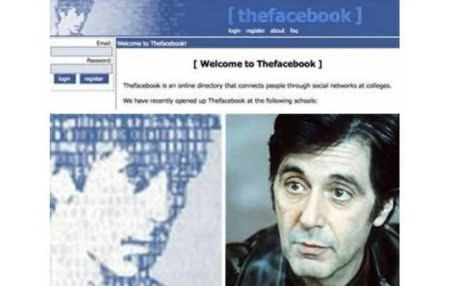
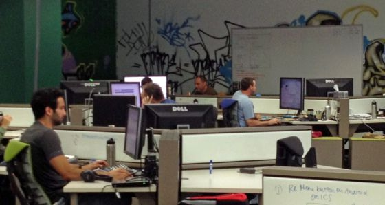
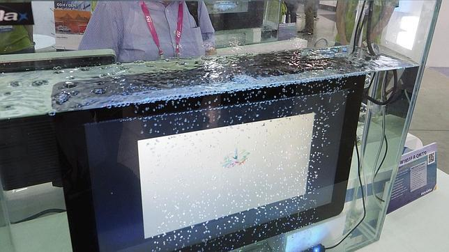
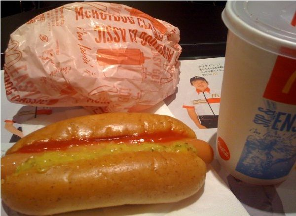
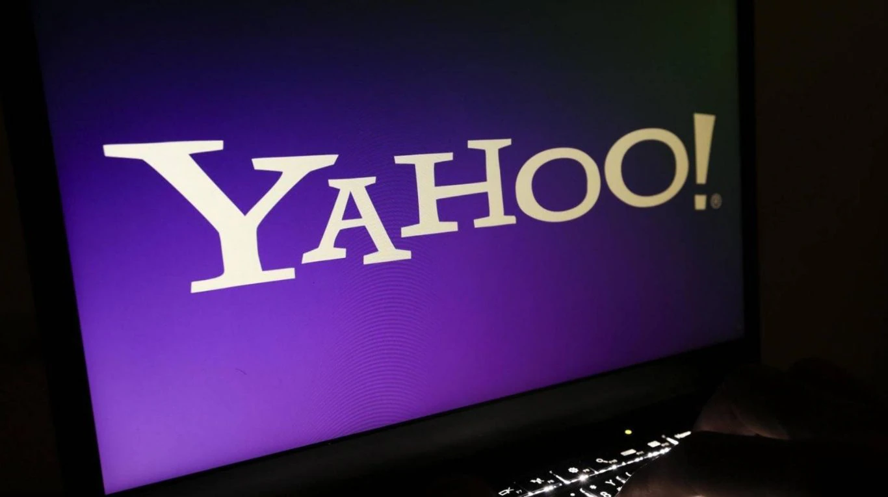
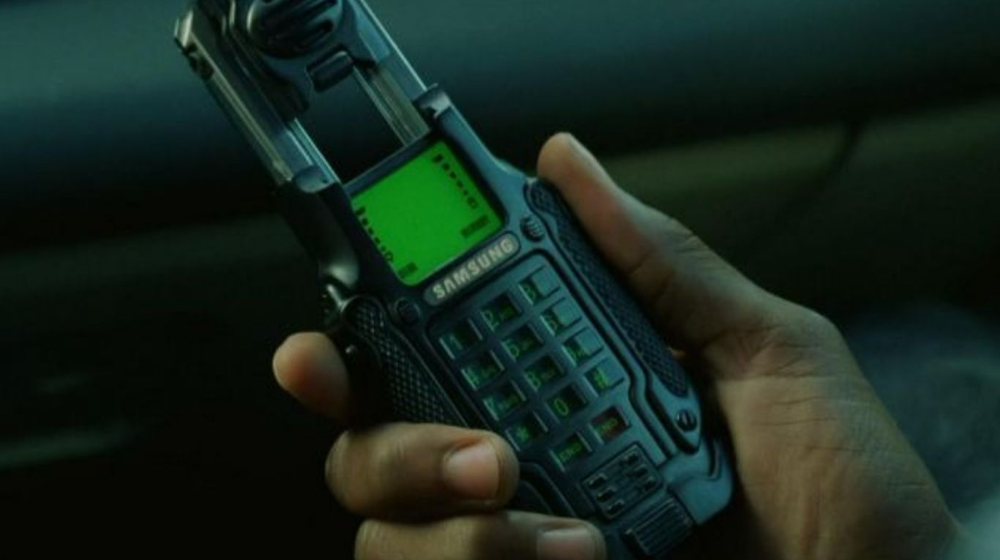
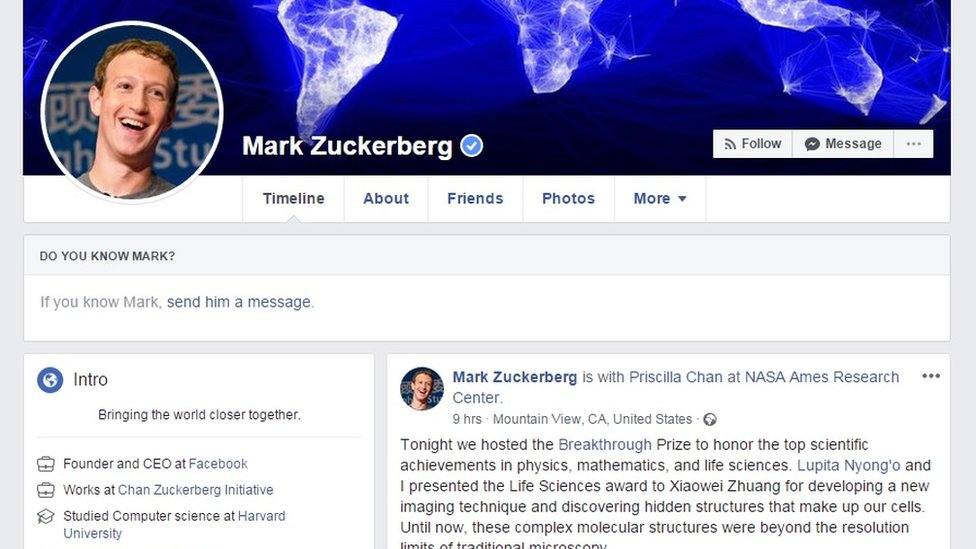

Datos curiosos WEB
TODOS ESTOS DATOS FUERON ALMACENADOS Y BUSCADOS, CADA UNO ESTAN ESPECIALMENTE SELECCIONADOS.
1- Un puente en París que podría colapsar por tanto amor
Seguramente, varios han oído del puente de los candados en París, donde las parejas se juran amor eterno y sellan su interacción colocando un candado en el puente de las Artes. Se considera que más de un millón de parejas la visitan al año, y dejan candados, velos de novia, entre otros complementos representando la interacción sentimental, sin embargo un dato curioso de todo el mundo es que estas partes son retiradas, pues el puente podría colapsar.

2- La cara de Al Pacino fue el primer logo de Facebook
Las redes sociales además permanecen rodeadas de leyendas, sobre su construcción o contenido que poseen en la plataforma. Es de esta forma, que te contamos un dato curioso de Facebook, puesto que tal vez pocos lo saben, sin embargo el primer logotipo de la enorme red social era la cara del conocido actor Al Pacino, el cual ha sido catalogado como el “tipo de Facebook”, sin embargo en el 2007 se logró el cambio al diseño original que se conserva hasta ahora.
3- Whatsapp solo cuenta con 55 trabajadores en su equipo
La famosa red de mensajería además tiene sus secretos, es así como una curiosidad de whatsapp, es sobre cuántas personas componen su equipo de trabajo y aunque no lo creas, son solamente 55 personas las que permanecen detrás de esta enorme red social. Debido a que son el mismo equipo, con el que inició y que pasó a las oficinas de Facebook, una vez que éste compró la app.
4- Existe un computadora que funciona con sólo gotas de agua
El planeta tecnológico tiene demasiados mitos y leyendas sobre los adelantos que van construyendo todos los años. Es de esta forma, que te contamos uno de los datos curiosos de la tecnología, que seguro no sabías, y es existente una PC que funciona a base de gotas de agua, puesto que un equipo de la Universidad de Stanford tiene un ordenador donde sus bits funcionan con base a gotas de agua, hace cada una de las labores de una Pc regular, sin embargo un poco más retardado.
5- McDonald’s no vendía hamburguesas, vendía Hot dogs
Varios amamos las increíbles hamburguesas de esta enorme marca, sin embargo una de las curiosidades de McDonald ‘s, es que inicialmente el restaurante comercializaba hot dogs, y es que en los años 1937, era una de los platos que más se comercializaban. Es de esta forma, que recién en el año 1948, los dueños cambiaron el menú a uno más generalizado con hamburguesas y papas. En Japón aún se puede hallar hot dogs en el menú.
6- El nombre del popular Yahoo es un acrónimo
La parte importante de los usuarios de las redes sociales, han usado Yahoo, alguna vez de su historia, empero existe una curiosidad de Yahoo, y trata sobre su nombre, puesto que si no se han dado cuenta, es un acrónimo, el cual es “Yet Another Hierarchical Officious Oracle”, el cual significa “Otro oráculo oficial jerárquico”.
7- Samsung creó un celular con la temática de Matrix
La marca de celulares coreana continuamente ha sorprendido a los usuarios por los diferentes grupos que lanza al mercado. Es de esta forma, que un dato curioso de Samsung nos hace volver al 2003, donde la marca arrojó un Samsung SPH-N270, inspirado en el terminal que usaban en la cinta Matrix: Reloaded. Asimismo, no ha sido el enorme celular, empero ha sido una buena táctica y además ha sido bastante requerido por los admiradores de la cinta.
"8- Con solo agregar un código puedes ver el perfil de Mark Zuckerberg
Capaz no sabías esta curiosidad de Facebook, empero existe un código para ver el perfil real del autor de la red social. Solo debes añadir “/4”, al url de www.facebook.com y te llevará al perfil de Mark Zuckerberg. Cuenta de Zuckerberg
9- HTC fue el primer creador de la aplicaciones
Un gran dato curioso del mundo del Internet fue sobre quienes crearon la primera aplicación móvil, y HTC fue la empresa quien se arriesgó junto con Samsung, a lanzar la primera app al mercado, las cuales fueron Google Maps Navigation y el popular juego Angry Birds.
unificación de celdas
integrante 1 integrante 2 integrante 3 integrante 4 grupo Cesar Rascon Reyes Axel Aron macias Braulio Granja Luis Raul Villa 659